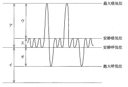

スパイロメトリは、気息の出入りを計測して各種肺気量を求める検査であり、呼吸機能検査の中で最も基本となる検査である。
術前検査として、呼吸器疾患のスクリーニングや呼吸器障害の病型分類に利用される。
肺気量は複数の分画から構成される。スパイロメトリで測定できるものとできないものがある。
| 分画 | 略語 | 定義 |
|---|---|---|
| 吸気予備量 | IRV | 安静吸気位→最大吸気位 |
| 1回換気量 | TV | 安静吸気位と安静呼気位の間 |
| 呼気予備量 | ERV | 安静呼気位→最大呼気位 |
| 残気量 | RV | 最大呼気位で肺内に残る量 |
| 肺気量 | 略語 | 構成 | スパイロ計測 |
|---|---|---|---|
| 最大吸気量 | IC | TV＋IRV | 可能 |
| 肺活量 | VC | IC＋ERV | 可能 |
| 機能的残気量 | FRC | ERV＋RV | 不可 |
| 全肺気量 | TLC | VC＋RV | 不可 |
努力性呼気を用いて気道閉塞の程度を評価する。
%VC（予測肺活量に対する実測値の割合）と1秒率を組み合わせて分類する。
| 病型 | %VC | FEV₁.₀% | 代表疾患 |
|---|---|---|---|
| 正常 | ≧80% | ≧70% | － |
| 閉塞性障害 | ≧80% | <70% | COPD、気管支喘息 |
| 拘束性障害 | <80% | ≧70% | 間質性肺炎、肺線維症 |
| 混合性障害 | <80% | <70% | 進行した肺気腫 |
努力性呼気時の気量（横軸）と気流速度（縦軸）の関係を示す曲線。疾患により特徴的なパターンを示す。
肺気量分画を図に示す。
1回換気量はどれか。1つ選べ。

【解説】1回換気量（TV）は安静吸気位と安静呼気位の間の量である。図中の「エ」は安静呼吸時の波形の振幅部分を示しており、これが1回換気量に相当する。「ア」は吸気予備量、「オ」は呼気予備量、「イ」は最大呼気位を示している。
術前検査で呼吸器障害の病型分類に利用されるのはどれか。1つ選べ。
【解説】スパイロメトリは%VCと1秒率を用いて呼吸器障害を閉塞性・拘束性・混合性に分類できる。血液ガス分析は酸素化・換気状態の評価、パルスオキシメータはSpO₂の測定、カプノグラフィはETCO₂の測定に用いる。